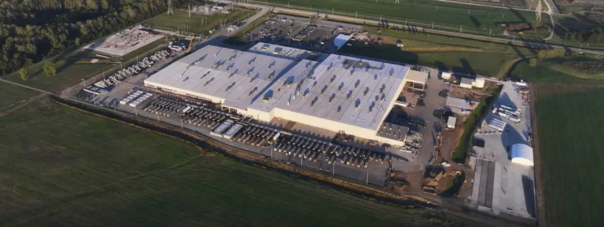

How AI Companies Power Their Data Centers
Nuclear deals, gas turbines and renewables
The world has experienced a rising demand for computing resources that goes hand in hand with the demand for electrical energy. This article explores how companies are powering the data centers without overloading the grid.
Reasons why the grid is not enough
With AI scaling up our economies and the unstoppable demand for better models, every AI company is trying to get more compute, bring down the token prices and make their services more reliable.
This global race that consumes power 24/7 requires immense amounts of energy that the grid can't produce fast enough to keep up with the demand. Hence, the AI companies and hyperscalers are turning to alternative energy sources.
Going nuclear
Nuclear power has been around for decades and is one of the most reliable and clean sources of energy. Therefore, many companies have already signed deals to use energy from nuclear power plants and contracts for the output of plants that are yet to be built.
Microsoft has committed to buy electricity from a reactor at Three Mile Island, the site of the worst nuclear accident in US history. It is being renovated for a whopping $1.6 billion with the aim of delivering about 835 megawatts of power as early as 2027 [1].
While Meta has also signed a similar deal with a power plant in Illinois [2], Google placed its money on building modular nuclear reactors, which aim to be cheaper and faster to build, strengthening its position in the market [3].
Building their own power plants
Some companies don't have time to waste and are building their own power plants right next to their data centers. One such example is Colossus, built by Elon Musk's company xAI in Memphis, where the Grok chatbot was trained. The data center itself was legendarily built in a matter of months, creating a real need for an electricity solution. Therefore, the company decided to build around 35 gas turbines [4].

While this approach is great for scaling, it pollutes local environments and consequently is becoming increasingly problematic due to regulatory and environmental concerns [5].
Renewables for data centers
There is a long-term trend towards using renewable energy sources across all industries, including the tech sector. However, there is a persistent challenge in ensuring a stable and reliable supply due to the unpredictable nature of wind and solar power.
Amazon ranks among the top investors in this sector with its support for over 700 projects related to renewable energy [6]. The real challenge is to store the excess energy efficiently to balance out the fluctuations in supply and demand.
There appears to be no obvious solution as of now, but the companies' actions provide clues. They are combining all of the above-mentioned approaches to ensure a stable supply of energy for their ventures while avoiding excessive regulations and environmental limitations.